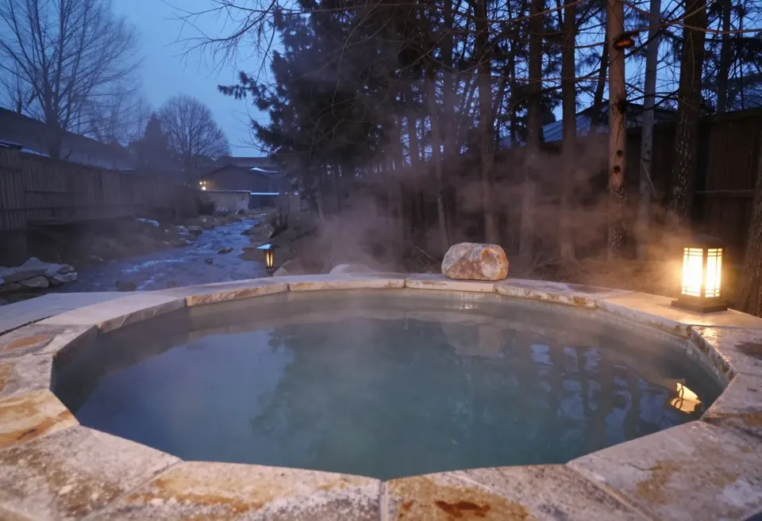
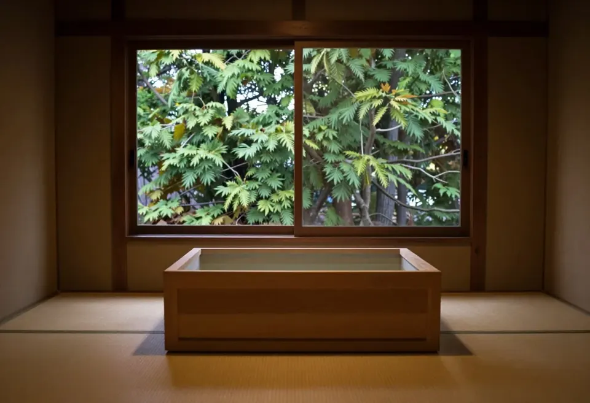
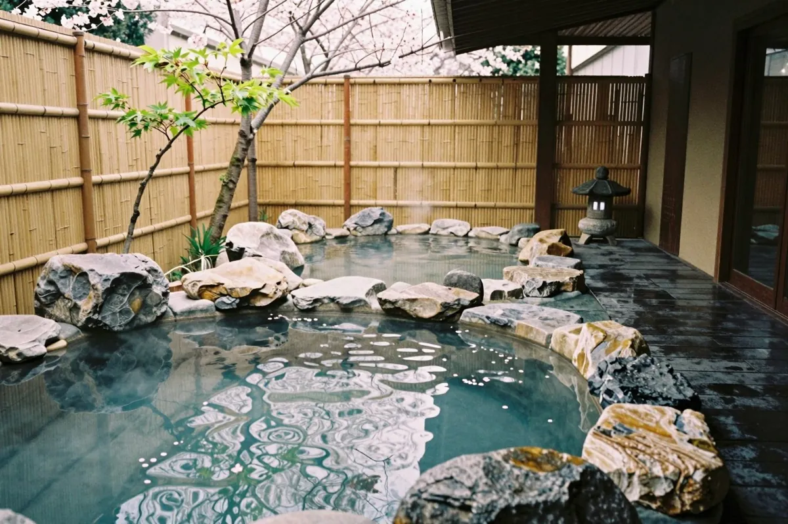
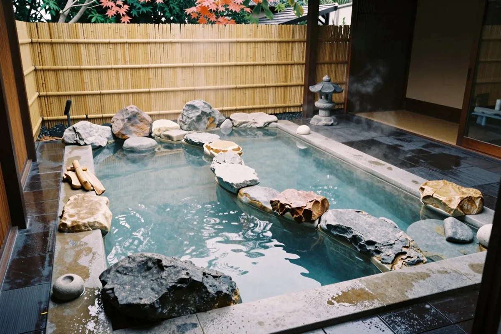
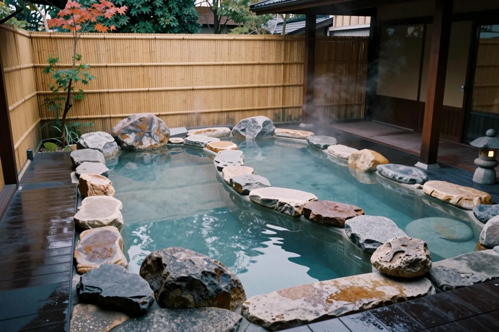
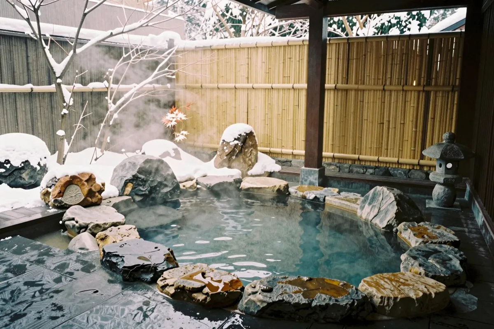

第二章
温泉
効能をうたうより、湯につかる時間と、まわりの自然を。
露天風呂
川の音が、湯のなかまで届きます。
杉の木立の向こうに空が開け、時間とともに、湯の色も空の色も変わっていきます。

内湯
檜の湯船に、窓の緑が映ります。
灯りは低く、音はやわらかく。朝の光が入る時間は、とくに静かです。

季節の湯浴み
今の季節の湯




春は新緑、夏は川風、秋は紅葉、冬は雪見。同じ湯でも、季節ごとに見える景色が変わります。
ご利用案内
湯のご案内
- お風呂
- 内湯・露天風呂とも、男女別
- 入浴時間
- 15:00〜24:00／翌朝 5:30〜9:00
- 貸切風呂
- 1か所・予約制・50分
- 備品
- タオル・アメニティは、客室と大浴場にご用意しています
※入浴時間・貸切風呂などは、見本としての仮の設定です。